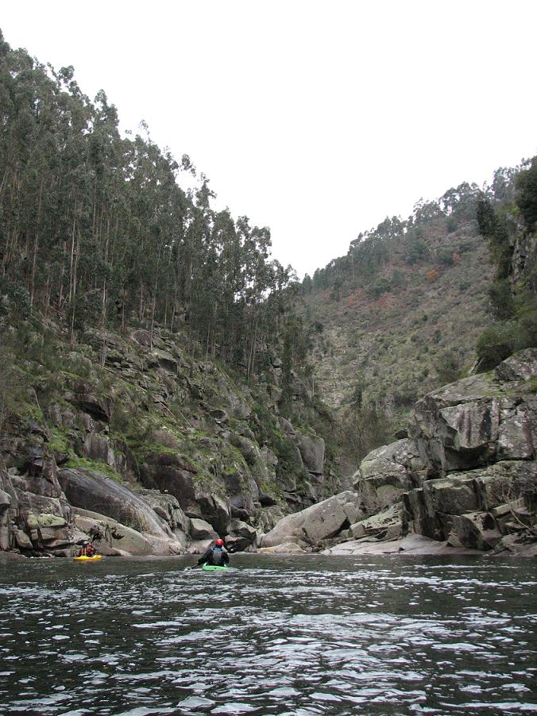
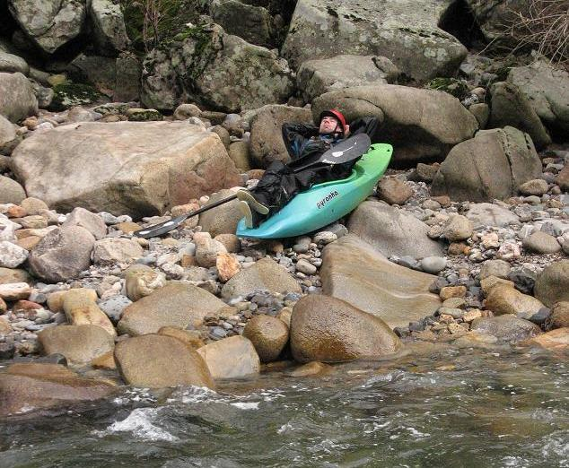

Paiva Gorge
‘La indecisión es la llave a la
flexibilidad’
|
|
Paiva Gorge |
||
|---|---|---|---|---|
|
‘La indecisión es la llave a la
flexibilidad’ |
First run on the Paiva Gorge
The Rio Paiva, particularly the gorge section (Garganta do Paiva), is yet another classic in the Alpine style. Tricky boulder rapids with distinct lines. This was the first river of our trip that was entirely bereft of local boys accompanying us.
At the start it all begins fairly simply - a flat water paddle-in giving you time to admire the beautiful valley, noting in the distance how the sides begin to encroach. The obvious gradient drop ahead and the twists in the valley - all indicators of fun times ahead.
Rob J. and Mr. Fred push on into the gorge...

Tributaries tumbling in from the side. Much of the river sides were like this on the Paiva. Not a place from where you would want to walk out.

There are no pictures of the first rapid, which is now known as Fred's Rapid.
The second rapid is about 100 metres, with four ledge drops. Catherine shows the way on the entry...

As you can see, there's more of that lovely boulder stuff going on here. Big blocks of granite, making pourovers, holes, eddies, sieves - all the good stuff that makes your day on the water.
This rapid is now known as Catherine's Rapid...

Mr. Fred, in a rare unguarded moment, drops the 'adrenaline facade' and chills for a bit on the river bank...

When asked how he felt about the Paiva Gorge, he had this contradictory message:

The thumb says yes, but the face says maybe.
The next rapid comprised some shallow slides - Rob stays on track...

...on track like Scalextric...

This stretch was quite shallow and it was easy to get off line if you weren't paying attention. Here's Ferg paying attention...

Here's Jim post-not-paying-attention, having head ruddered the section above.

Here's Ferg, posing for a photo. You don't see this very often - most shots of Ferg have to be acquired in stealth mode. Check out that cheese-eating grin.

The drop in the background is a mess and we portaged it. It has a messy lead-in, it's not boofable, it's undercut, there's a scour hole behind the curtain, and the exit is protected. Nasty.
When Ferg thinks the camera is gone, you can get photos. See how relaxed he now appears, only moments after the palpable tension of the previous shot.